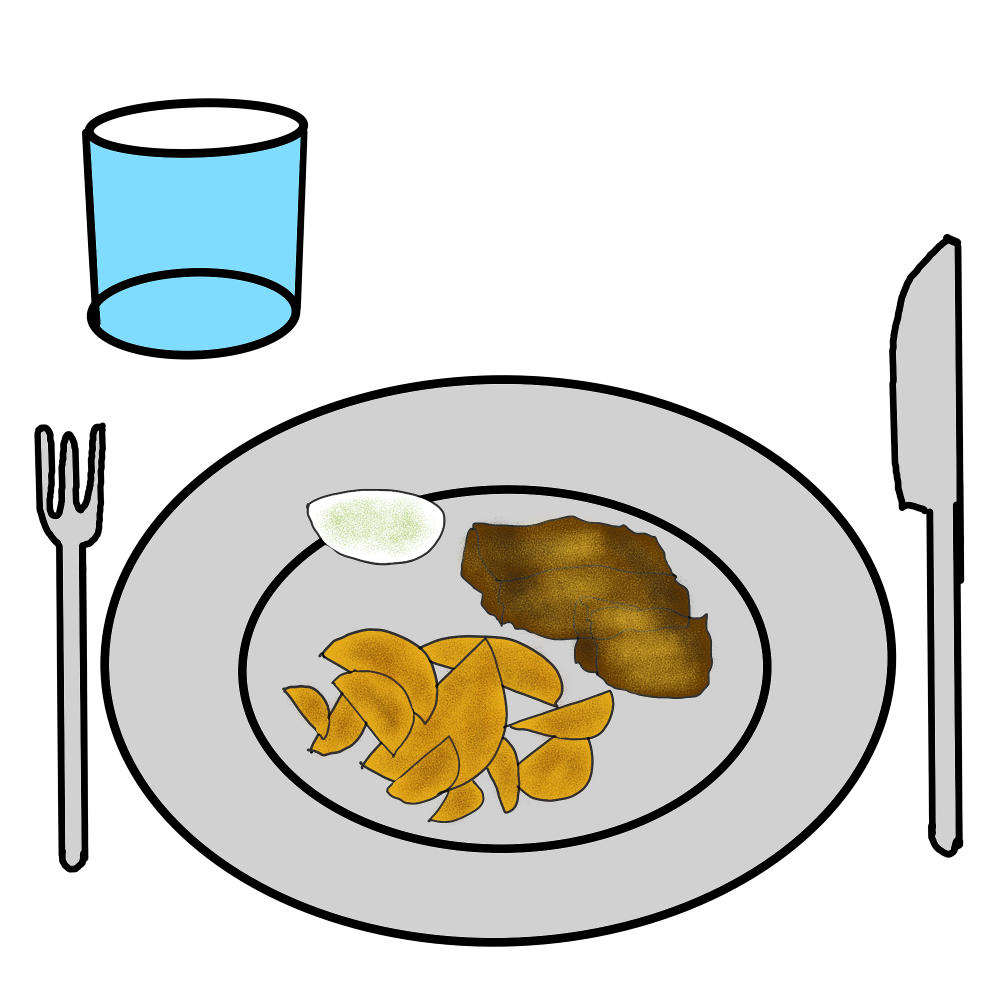

Tofu-Fish and Chips

Beschreibung
Vorbereitung: 1 Tag
Kochen: 45 Minuten
Portionen: 2
Zutaten
Tofu-Fisch
- 1 Blatt Norialgen
- 200 Gramm Tofu fest
- 4 Esslöffel Reismehl
- 100 Milliliter Bier glutenfrei bei bedarf
- Öl zum frittieren
- Salz
Tartar-Sauce
- 4 Esslöffel Vegane Mayonnaise
- 3 Esslöffel Sojajoghurt
- 1 Teelöffel Kapern
- 20 Gramm Gewürzgurken
- 1,5 Teelöffel Senf
- 1 Esslöffel Zucker
- 2 Esslöffel Dill
- 1-2 Teelöffel Zitronensaft nach Geschmack
- Salz
- Pfeffer
Pommes
- 400 Gramm Kartoffeln festkochend
- Salz
- Öl zum frittieren
Anleitung
- Kartoffeln schälen, abwaschen und zu Pommes verarbeiten. Dafür einfach längs halbieren und in Streifen schneiden.
-
Für die Sauce hackst du Kapern und Gewürzgurken ganz fein und gibst sie anschließend in eine Schüssel.
Jetzt gibst du die Mayonnaise und den Sojajoghurt dazu und vermengst alles.
Den Dill fein hacken und zusammen mit dem Zucker sowie dem Senf dazu geben und gut verrühren. Mit Salz,
ganz wenig Pfeffer und etwas Zitronensaft abschmecken.
-
Nimm den Tofu aus dem Kühlschrank und halbiere ihn.
Lege die Hälften nebeneinander auf ein trockenes Baumwolltuch und beschwere den Tofu.
Ich habe dafür einen Topf mit Wasser genommen. Lass das Ganze jetzt für eine Stunde stehen,
damit möglichst viel Wasser aus dem Tofu gepresst wird.
-
Jetzt gibst du den Tofu in eine Tupperdose und frierst ihn über Nacht ein.
Am nächsten Morgen holst du ihn heraus und wiederholst das Spiel mit dem Topf voll Wasser.
Dabei lässt du den Tofu bei Zimmertemperatur auftauen. Sobald der Tofu trocken und aufgetaut ist,
legst du ein zurechtgeschnittenes Stück Nori auf jeweils eine Seite und drückst es an.
Durch die restliche Feuchtigkeit sollte das Algenblatt nach 1-2 Minuten gut haften.
Den Rest des Noriblattes kannst du ein andermal verwenden.
-
Das Wasser im Topf kannst du im Anschluss für die Pommes verwenden.
Gib einfach die vorgeschnittenen Pommes ins Wasser und erhitze dieses auf dem Herd.
Sobald es kocht nimmst du die Kartoffeln jedoch heraus und lässt sie abtropfen.
Dieser Schritt dient nur dazu die Oberflächenstruktur der Pommes etwas aufzuweichen,
sodass sie beim Frittieren knuspriger werden.
-
Für den Teig nimmst du das Reismehl und vermengst es in einer Schüssel mit dem Bier.
Der Teig sollte eine Konsistenz wie der Teig für Pfandkuchen haben.
Gib etwas Salz dazu und lasse den Teig für 5 Minuten ziehen.
-
Falls du keine Friteuse haben solltest, dann kannst du auch einen großen Topf nehmen.
Beachte aber die Sicherheitshinweise im Text oben. In diesen Topf füllst du reichlich Öl und erhitzt dieses.
Ob das Öl heiß genug ist erkennst du, indem du einen Holzlöffel in den Topf hältst.
Steigen kleine Bläschen auf, dann ist das Öl heiß genug.
-
Ziehe jetzt den Tofu durch den Teig und achte darauf, dass er von beiden Seiten gut bedeckt ist.
Nun frittierst du den Tofu im heißen Öl aus. Schon nach wenigen Sekunden wird der Teig braun.
Nach 1-2 Minuten ist der Tofu bereits fertig und du kannst ihn mit einer Schaumkelle herausholen
und auf Küchenpapier das überschüssige Öl abtropfen lassen.
-
Gib nun die Pommes in das heiße Öl. Sobald die Pommes leicht braun sind nimmst du sie wieder heraus
und wartest 5 Minuten. Nun werden die Pommes ein zweites Mal frittiert. Sobald sie schön braun sind kannst du sie herausnehmen
und ebenfalls auf Küchenpapier abtropfen lassen. Danach salzen und mit dem Tofu-Fisch zusammen auf einem Teller anrichten.
Gib etwas Tartar-Sauce dazu und träufel noch etwas Zitrone auf den Fisch. In England beträufelt man das Gericht noch mit Malzessig.
Dies ist aber optional, da viele Deutsche diese Kombination nicht mögen.
Zurück zur Homepage